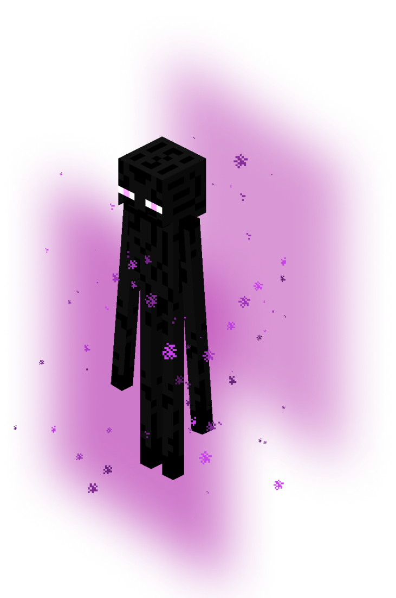

Endermen are tall, neutral mobs found throughout the game's dimensions. They typically ignore players unless attacked or stared at directly. Endermen teleport to avoid harm from water, sunlight, projectiles, and more. They also sometimes pick up blocks.
